さいきん 特によくね（る）こ [梅吉]
季節的なものもあるのでしょうか。
最近の梅吉さんは日がな一日ず〜っと寝ています。
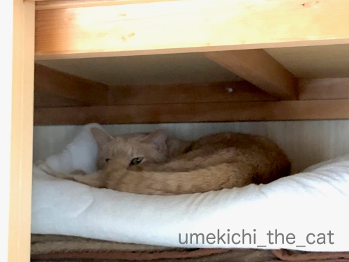
この日は押し入れで。
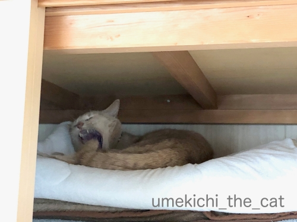
あくび付き。
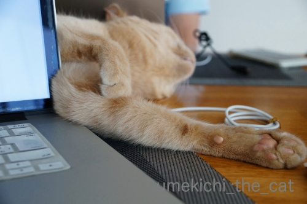
PC横で。
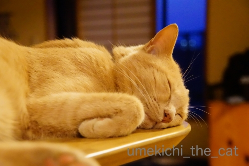
夜はカウンターの上で。
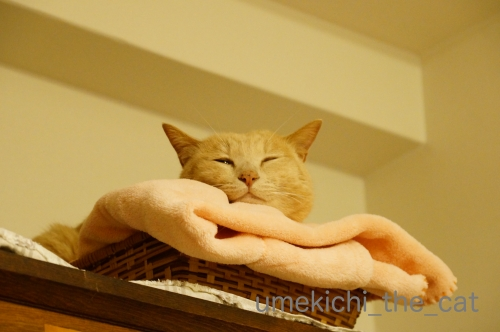
これは寝落ち寸前のお顔。白目じゃなくて残念w
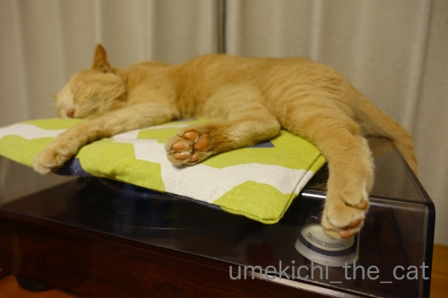
レコードプレーヤーの上で。
ピントは肉球です！梅吉の肉球って「ピンク」ではないんですよね。
ちょっと赤みが強い感じ。
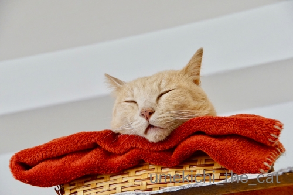
一番お気に入りのベッドの位置は棚の上なので自然このアングルの写真が多いです。
梅吉の口元には茶色のシミみたいのがたくさん。
お口がパカーと開いて見えるのはそのシミのせい・・・なんですが
これは本当に薄口開けて寝てましたわwww
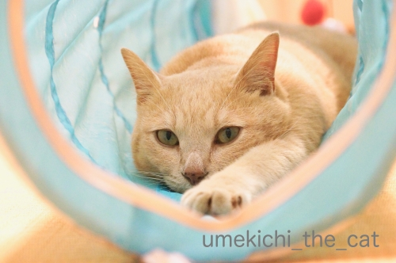
眠っているかと思えばこんな風に目を開けたままじーっとしていることもよくあります。
宇宙と交信中なのか未知の生物とタッチしようとしているのか・・・
当然このおててはおかーさんににぎにぎされます＾＾
 ↑ガブッと一押し↑
↑ガブッと一押し↑
5月初旬に植えたインドジンウソツカナイ。
（インドジンウソツカナイってなに！？）
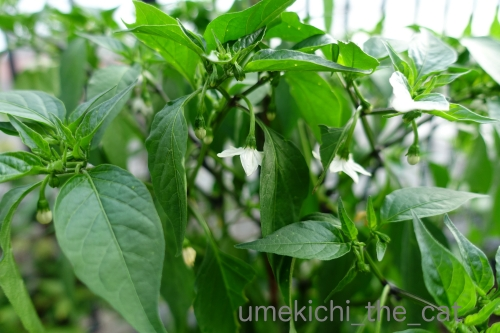
こんなに大きくなって大豊作です。
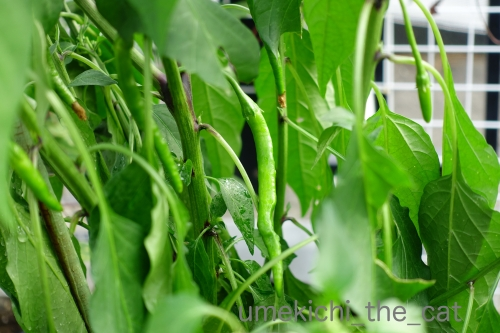
生っているのわかりますか？
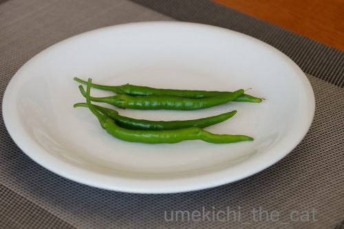
初収穫は6月13日でした。
一ヶ月ちょっとで収穫できましたよ。
からーいのを期待していたのですがそれほど辛くありません。
生のままかじっても同じ。
インドジンナットクシナイ。
初収穫のものは生のままと麻婆茄子に使いました。
爽やかな辛味〜。
昨夜はゴーヤチャンプルーに入れたのですがこれがぴったり。
コーレーグスを入れたような辛さになって大満足！
この先もどんどん収穫できそうなので次は何に使おうかな。
今日20日は2020東京オリンピックのチケット抽選の結果発表ですね。
我が家は開会式一択でエントリー。
もしもチケットゲットできたら今度はホテル探しです。
さっきちらっと宿泊予約サイトをチェックしたら
来年の7月の予約はまだ受け付けていないようで・・・
さて、どうなることやら。
最近の梅吉さんは日がな一日ず〜っと寝ています。
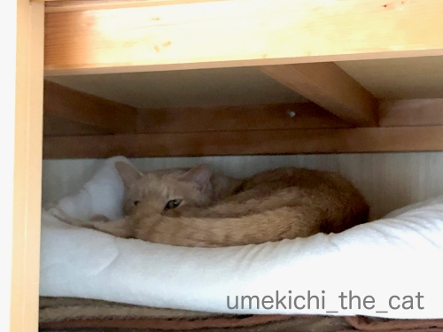
この日は押し入れで。
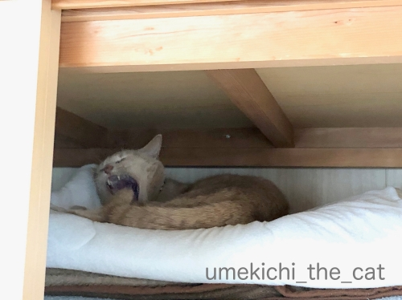
あくび付き。
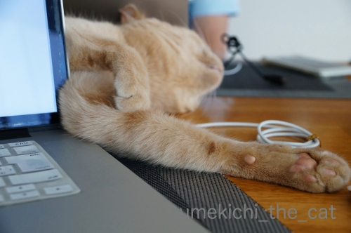
PC横で。
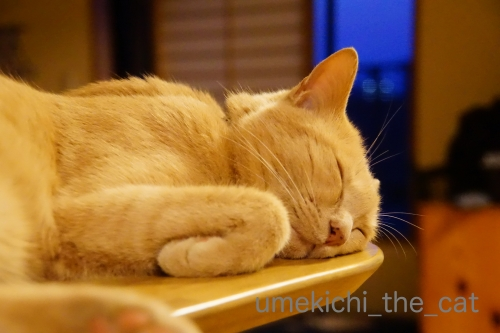
夜はカウンターの上で。
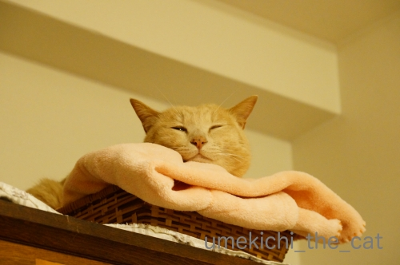
これは寝落ち寸前のお顔。白目じゃなくて残念w
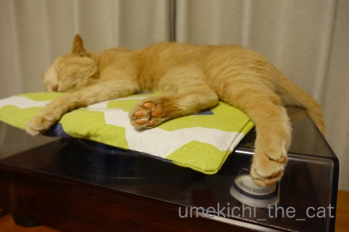
レコードプレーヤーの上で。
ピントは肉球です！梅吉の肉球って「ピンク」ではないんですよね。
ちょっと赤みが強い感じ。
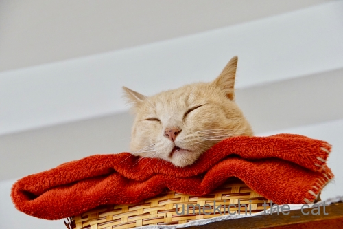
一番お気に入りのベッドの位置は棚の上なので自然このアングルの写真が多いです。
梅吉の口元には茶色のシミみたいのがたくさん。
お口がパカーと開いて見えるのはそのシミのせい・・・なんですが
これは本当に薄口開けて寝てましたわwww
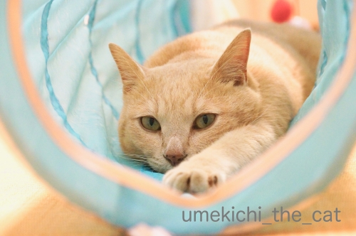
眠っているかと思えばこんな風に目を開けたままじーっとしていることもよくあります。
宇宙と交信中なのか未知の生物とタッチしようとしているのか・・・
当然このおててはおかーさんににぎにぎされます＾＾
5月初旬に植えたインドジンウソツカナイ。
（インドジンウソツカナイってなに！？）
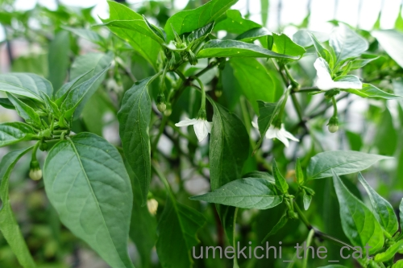
こんなに大きくなって大豊作です。
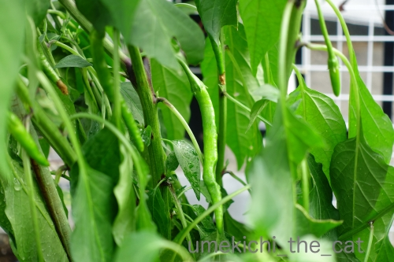
生っているのわかりますか？
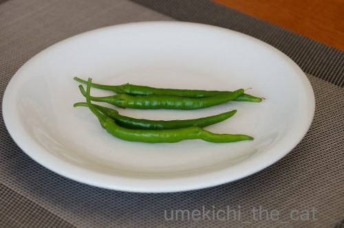
初収穫は6月13日でした。
一ヶ月ちょっとで収穫できましたよ。
からーいのを期待していたのですがそれほど辛くありません。
生のままかじっても同じ。
インドジンナットクシナイ。
初収穫のものは生のままと麻婆茄子に使いました。
爽やかな辛味〜。
昨夜はゴーヤチャンプルーに入れたのですがこれがぴったり。
コーレーグスを入れたような辛さになって大満足！
この先もどんどん収穫できそうなので次は何に使おうかな。
今日20日は2020東京オリンピックのチケット抽選の結果発表ですね。
我が家は開会式一択でエントリー。
もしもチケットゲットできたら今度はホテル探しです。
さっきちらっと宿泊予約サイトをチェックしたら
来年の7月の予約はまだ受け付けていないようで・・・
さて、どうなることやら。

カフェオレ色の梅吉

梅吉 2023年8月10日 永眠


梅吉と出会った譲渡会

犬猫の理由なき殺処分ゼロ
妄想広告
UMEKICHI 光

爆発的に早い！
時々攻撃的！
Thanks to Mr.Boss365
爆発的に早い！
時々攻撃的！
Thanks to Mr.Boss365

うちの子も最近見かけないぐらいあっちこっちで寝ています(^^)
by 50oyaji (2019-06-20 00:16)
いろんな場所で安心しきって眠ってる梅吉さん。見ていると眠くなります。
とっても気持ち良さそうなんだもの~。
by zombiekong (2019-06-20 01:17)
梅吉さん正しい猫ですね（笑）
薄口開けてというのにハマってしまいました（笑）
棚の上のカゴの中、
アゴ乗せに良い具合に毛布が置いてありますね。
おかーさんの心遣いの、
赤い色もピンクの色もよく似合ってます。
タネ屋の前を通った時、不思議な名前を思い出せなかったので、そうだインドジンウソツカナイでした。
段々、辛くなるのかしら。
女子サッカーで、夫が4時前から起き出しました。
ゴソゴソしているので、泥棒かと思いましたよ（笑）
2度寝できるかな（笑）
by kiki (2019-06-20 04:19)
うちの子達は、寒い時にはコタツから出ず
暑い時には床に寝転がって動きません。
動くのは快適温度の時だけ＾＾；
by ぽちの輔 (2019-06-20 06:10)
梅吉さん春眠ですね！
何処でも寝ちゃうのが良いですね(^^)
by ma2ma2 (2019-06-20 07:19)
湿度が高いと眠りまくってますねぇ(⌒-⌒; )
うちも床に落ちたり、ベッドの上でへそ天になったりと
自由奔放な寝姿を披露してくれてますw
起きて相手してほしいけど、こうやって幸せそうな寝姿を
見せられるとこちらも自然に目が瞑ってきて・・・zzzですw
by ニッキー (2019-06-20 07:52)
寝ている梅吉さんを観察出来る良い時期とも？
出来れば見えるところで
寝てくれると、ほっこりしますねぇ～(#^.^#)
by きぃ (2019-06-20 09:15)
梅吉くんにもくつろぎの場所がたくさんあるねー^^
好きなところで日がな一日お昼寝。
幸せだなーって思うよ^^
ちょっとだけ開いてるくちも可愛いんだよねー。
無防備すぎてニヤニヤします^^
by リュカ (2019-06-20 11:38)
寝ている姿はほんと癒されますね
邪魔したくなるほど可愛いです
私もオリンピック 開会式のみ
さぁどうかなー♪
by チャー (2019-06-20 11:51)
梅吉さん、安心して眠れる場所がいっぱいあっていいね～♪
レコードブレーヤーの上に座布団（？）が敷いてあるのに爆笑(≧▽≦)
ここで寝る前提なんですね！
ウチのも湿度が高いと動きません。
外耳炎が心配で除湿しまくっているせいか、まだ床ではなく、古い果物カゴか窓辺の猫ベッドで寝ています。
チケット結果いかがでしたか？サイトにアクセスするのがまず大変みたいですね^^;
当選したら次はホテル争奪戦、オリンピック本番までにまだまだ戦いは続くのですね！
by ゆきち (2019-06-20 12:18)
こんにちは。
今日は蒸し暑かったです。今帰宅、疲れました。
梅吉君のように寝ていたかったです。
小生猫も朝からよく寝ています。季節も関係ある感じですね。
梅吉君ようにPC横で寝てくれたら、癒されて「文字打ち」が捗りそうです。
ベッドの梅吉君！！赤が似合いますね！！
オリンピック！！全滅メール届きました（涙）
早朝、IDにアクセスしましたが・・・
エラーで確認出来ないぐらい混んでるみたいです。
ちぃさん！！「開会式」当選してると良いですね！？(=^･ｪ･^=)
by Boss365 (2019-06-20 18:42)
最近、こちらでも外で寝ている猫を多く見かけます。しょうちゃんはたまに遊びに来ますが、どこかで寝ているのかな・・・なんて思ってます。
梅吉さんの寝姿、本当に気持ちよさそうですね(^_^)
by kou (2019-06-20 20:02)
ここ３日ほど梅吉さんと同じ感じです。
とにかく眠たい。でも私には仕事がある(*_*)
眠れる時に梅吉さんには寝ていただきましょう。
by あとりえＳＡＫＡＮＡ (2019-06-20 20:56)
雨の日の猫は眠い、ですね。
年を取ってくると一層、寝ている時間が長いそうですが、梅吉さんはまだまだ若者だと思うんですけどねー。
梅吉さんを見習って、いっぱい寝たいですぅ(:_;)
by ChatBleu (2019-06-20 21:24)
梅吉さんの寝姿、癒されますね。いいなあ♪ ^^)
by yes_hama (2019-06-20 21:50)
俺の寝顔に匹敵する可愛さですね（＾＾）
by (。・_・。)２ｋ (2019-06-20 23:28)
そうです。猫さん、今の時期は一日寝ています。
寝すぎです。
完全に無視されます。
いい加減にしてほしいです^^;
私もこの時期は眠たくてたまりません＾＾
by riverwalk (2019-06-20 23:44)
梅吉さん、赤い毛布が似合いますにゃ〜。
オリンピックチケット、どうだったでしょう。
by nachic (2019-06-21 00:21)
はあはあ、寝姿どれも萌え萌えでした♡
インドの唐辛子、さわやかな辛みですか、、、
生をかじってみたいわあ。
東京オリンピック１試合だけ当たりました(^O^)v
by liang (2019-06-21 07:09)
宇宙人との交信、ずっと継続中のようですね。
オリンピック、私は全滅でした(^_^;)
by よーちゃん (2019-06-21 09:06)
お手手くねっとで寝ている～～(萌
タワーではなく棚の上が一番のお気に入りなのですね♪
赤い毛布が映えますな。
インドジンウソツカナイこの冗談みたいな名前の唐辛子も
マジウマなのですね(^^ さわやかな辛みかぁ
唐辛子大豊作でコウモン様の危機にならぬようご自愛くださいませ。
by marimo (2019-06-21 16:13)
梅ちゃんも『どこもボクの場所』ですよねｗ
一人っ子だとどこでも行きたい放題やりたい放題(笑)
寝顔っていいですよね♪癒されます～(*´ω｀*)
ホントだ！肉球、コーラルピンクって感じ❤
インドジンウソツカナイってｗｗｗｗ(爆w)
マジか？って名前ですがおいしいお野菜なのですね(笑)
うちのボスの奥様が開会式当たったそうです＾＾
でもボスは連れてってもらえなさそう(*￣m￣)ﾌﾟｯ
by カトリーヌ (2019-06-21 17:15)
よく寝る先生は育つ！
気持ち穏やかに健康でありますように！^ ^
by 小松達也 (2019-06-21 18:28)
うちも最近寝てばっかりです！ナノなんか朝8時ごろから夕方4時ごろまで同じ所で寝てます(;^ω^)でもたまに横通ると目を開けてたり・・・
by palpal (2019-06-21 21:58)
寝る猫(こ)は育つ？（ﾟ□ﾟ）
ぁっ、東京オリンピックはチケット無くても見れるやつを見ようかなと思ってます？
マラソンとか競歩とかね（ﾟ□ﾟ）
by 英ちゃん (2019-06-22 14:00)
青唐辛子いいですよね～。
でもインドジンウソツカナイの品種の
ココロは何なんだろう？
チケットどうでした？
私は、なんだかんだで申し込みしてないし。
マラソンを見てから出勤しようかな。
（近いので）
カウンターの上の手を折って寝る梅吉さん激カワ！
by ふにゃいの (2019-06-23 18:26)
みなさま、お返事ごめんなさいですm(_ _)m
by ちぃ (2019-06-24 17:38)